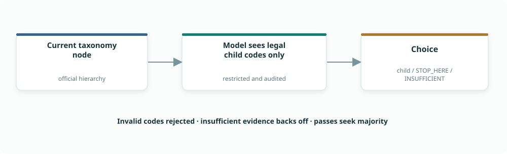

Retrieval and optional constrained LLM
The model path is a fallback, not an alternative source of official codes. It retrieves plausible branches locally and asks a model to traverse only legal children of the installed taxonomy.
Local lexical retrieval
The retriever indexes official node title, description and inclusion text. Exclusion notes are not indexed as positive search text; they are used as boundary evidence in traversal prompts. Two word representations are combined:
- word TF–IDF, unigrams and bigrams, sublinear term frequency, weight 0.6;
- character-boundary TF–IDF, 3–5-grams, weight 0.4.
For a query q and node v, the retrieval score is the weighted cosine-like TF–IDF dot product of the two representations. The retriever can select coarse level branches before ranking finer nodes, and it supports top_n, subtree restrictions, and batched queries. Repeated query strings are scored once per batch to reduce memory and repeated vectorization.
A constrained tree traversal

At each node, the optional backend receives only the current node and admissible children. Valid responses are one displayed code, STOP_HERE, or INSUFFICIENT in constrained JSON. STOP_HERE preserves a node supported by the evidence when it cannot distinguish children; INSUFFICIENT backs out of a node that is not itself supported, rather than falsely leaving it on the accepted path.
The normal passes=3 cycles precision-, boundary- and evidence-focused prompt variants. A strict majority of pass paths selects the deepest common supported code; otherwise the result can be unresolved or back off. Changing the number of passes to a value not divisible by the number of variants is explicitly flagged as potentially unbalanced.
Backends and caches
The classify CLI supports --llm none, --llm hf and --llm ollama. Deterministic mode (none) is the default, including in express. Hosted or local model availability and API usage depend on the configured backend. No LLM weights or credentials are bundled with PlaceType PH.
The decision cache's identity includes taxonomy version and content fingerprint, model/provider/base URL, prompt fingerprint, evidence, restrictions and pass count. This avoids reusing a decision from a materially changed prompt or model context.
Safety and abstention
The prompt explicitly treats establishment text as untrusted input and instructs the model not to follow instructions contained in place names, categories or products. Invalid child choices are not made into valid classification codes. An LLM cannot discard a reviewed deterministic code merely because a model refused a deeper branch.
Scheme-specific boundaries
A PCPC code inferred from a place type is a possible product/service family, never a complete product basket. A PSCC code cannot be generated from a place name alone; absent confirmed source mapping, it needs explicit product or commodity evidence to admit traversal. The three taxonomy questions cannot be collapsed into the same predictive target.
Implementation: retrieval.py · traversal.py · cache.py.